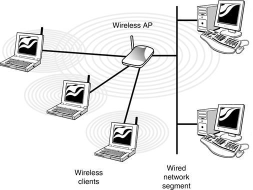
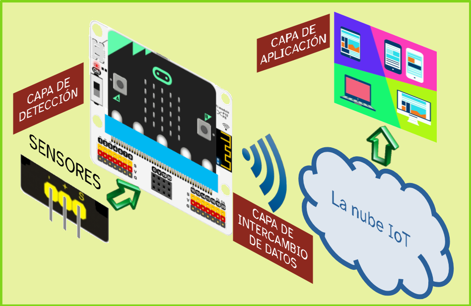

También conocida como pasarela o Gateway (en inglés), es el dispositivo que actúa de interfaz de conexión entre aparatos o dispositivos. Sirve para traducir la información del protocolo utilizado en una red inicial al que se usa en la red de destino, o simplemente, para conectar dos redes independientes entre sí.
Ejemplo
La red que forman los dispositivos electrónicos de mi casa se conectan a Internet gracias a que el router hace de puerta de enlace.
Red local

Definición
También conocida como LAN (Local Area Network) o red de área local, es un conjunto de dispositivos electrónicos comunicados entre sí dentro de un ámbito geográfico reducido al mismo edificio o a edificios cercanos, como mucho, de forma que permite a sus usuarios el intercambio de datos y la compartición de recursos.
Ejemplo
La red local de mi casa está formada por mi móvil y mis dos ordenadores, el de sobremesa y el portátil.
Acabas de conocer en qué consiste el Internet de las Cosas y su relación con Internet y con la nube.
Sin embargo, tal como se observa en los ejemplos de sistemas IoT conectados a la nube que has visto anteriormente, aún te falta por abordar el modelo general que define al sistema.
Este va a ser tu próximo paso.
En este apartado te centrarás en el esquema general de diseño de un sistema IoT conectado a la nube, el cual, te será muy útil para hacer la definición general de la estación meteorológica inteligente de tu Centro.
1. Más capas que en una reunión de superhéroes
Básicamente, un sistema IoT conectado a la nube está formado por sensores y actuadores gestionados por una placa microcontroladora con capacidad para conectarse a Internet. De esta forma se puede almacenar en una determinada plataforma digital una serie de datos captados, que tras ser convenientemente tratados, puedan propiciar una determinada respuesta.
Para comprender, de una manera simplificada, lo que se necesita para crear un sistema IoT conectado a la nube, se suele utilizar una comparación que consiste en pensar en la existencia de distintas capas, una encima de otra, que una vez superpuestas, dan lugar al sistema en su conjunto, tal como lo percibe el usuario.
Un esquema
Aquí puedes ver gráficamente cuál sería el esquema general de un sistema IoT con la indicación de las capas que se pueden considerar.

Un vídeo
Puedes verlo también en el siguiente vídeo en el que se muestran los elementos que forman parte de un sistema IoT.
Dado que todo forma un mismo conjunto, resulta útil diferenciar esas capas, ya que cada una se corresponde con distintas ramas de la tecnología que hay que emplear y es conveniente tratarlas por separado cuando se pretende dar vida al sistema.
Simplificando al máximo, se pueden diferenciar claramente tres capas que se detallan a continuación.
Capa de detección
Dispositivos IoT
En este nivel quedan englobados todos los dispositivos físicos que componen el sistema, como los sensores, los actuadores y los microcontroladores que suponen el conjunto de "cosas" que se van a intercomunicar.
Capa de intercambio de datos
Interconexiones de los dispositivos
En este apartado se engloban los medios y protocolos de comunicación entre dispositivos.
En el caso de conexión a la nube hay que destacar el importante papel de las puertas de enlace (traducción de término inglés "gateways") que permiten conectar la red local a Internet haciendo una labor de unión entre redes que operan con distintos protocolos de comunicación, ya que a nivel local se suelen usar unos (por ejemplo Bluetooth) y en Internet otros (como el TCP/IP).
Capa de aplicación
Servicios de computación en la nube
En este nivel se englobaría el procesamiento de la información (que hay quien prefiere separar en una capa independiente) como base del servicio prestado, que puede ser, principalmente, de tres tipos:
Infraestructura como servicio (IAAS). Es un hardware (junto con su correspondiente software de sistema) que puede ser utilizado a distancia por los usuarios.
Plataforma como servicio (PAAS). Son recursos destinados al desarrollo y utilización aplicaciones que pueden necesitar de una fuente de datos compartida.
Software como servicio (SAAS). Son las aplicaciones específicas (software) para cubrir una determinada necesidad sin que tengan que estar instaladas a nivel local.
Definición
También conocida como pasarela o Gateway (en inglés), es el dispositivo que actúa de interfaz de conexión entre aparatos o dispositivos. Sirve para traducir la información del protocolo utilizado en una red inicial al que se usa en la red de destino, o simplemente, para conectar dos redes independientes entre sí.
Ejemplo
La red que forman los dispositivos electrónicos de mi casa se conectan a Internet gracias a que el router hace de puerta de enlace.
Definición
También conocida como LAN (Local Area Network) o red de área local, es un conjunto de dispositivos electrónicos comunicados entre sí dentro de un ámbito geográfico reducido al mismo edificio o a edificios cercanos, como mucho, de forma que permite a sus usuarios el intercambio de datos y la compartición de recursos.
Ejemplo
La red local de mi casa está formada por mi móvil y mis dos ordenadores, el de sobremesa y el portátil.
2. Un esquema algo incompleto
Escoge una pareja para solucionar este ejercicio.
Se trata de que completéis el siguiente esquema de un sistema IoT compuesto por tres discos, uno encima del otro, con colores verde, rosa y naranja de los que sale una flecha que indica el nombre de la capa correspondiente, aplicación, intercambio de datos y detección, respectivamente. En el caso de la capa superior, la de aplicación, además hay otra flecha apunta a la palabra servicios. De todos los texto salen, a su vez, otras flechas que llevan a unos puntos suspensivos.
Deberéis, por tanto, dibujar en vuestro cuaderno ese esquema para añadir la información que falta de cada capa y que hay que indicar en los extremos de cada flecha, en sustitución de los puntos suspensivos.
Para conseguir alcanzar una meta es importante que seas un buen o buena estratega. Es decir, tener métodos, técnicas, “trucos” para llegar antes o de forma más fácil donde tú quieres.
Ahora te voy a enseñar una estrategia, ¡Aprovéchala para alcanzar tu reto!
El nombre de la estrategia es tipos de respuestas. En cualquier ejercicio o actividad siempre vas a encontrar alguna pregunta que responder. La forma en la que debes hacerlo, a menudo se corresponde con el tipo de cuestión planteada. Identificar los tipos de preguntas te ayuda a la hora de responderlas, pero además debes conocer cómo actuar en cada caso para no quedarte bloqueado aun cuando sabes la respuesta.
Podrás encontrar todo lo que necesitas sobre esta estrategia en los siguientes enlaces a la guía de la competencia de aprender a aprender:
Tómate el tiempo que necesites y recuerda que siempre puedes preguntarle al docente o a algún compañero o compañera cuando no entiendas algo.
¡Ánimo, seguro que lo haces genial!
4. ¿Me concede una entrevista?
Poneros en pareja y entrevistaros el uno al otro.
Después volvedlo a hacer cambiando los papeles de forma que el entrevistado sea entrevistador y viceversa.
Como en toda entrevista, el entrevistador debe tomar notas escritas de las respuestas del entrevistado.
Además, en las entrevistas, las preguntas deben estar preparadas previamente y este caso no es una excepción.
A continuación tienes una lista preguntas que puedes utilizar. Están referidas al modelo de organización por capas de un sistema IoT conectado a la nube que habéis podido leer en texto del punto uno de este apartado.
¿Puede decirme a qué viene esto de dividir en capas?
¿En qué consiste cada capa?
¿Puede decirme cuáles son los servicios de computación en la nube?
Pero, en resumen, ¿cómo se organiza un sistema IoT conectado a la nube?
En este esquema de capas ¿Dónde se situaría el almacenamiento de datos en la nube?
¿Cuál cree que es la capa que da más sentido al concepto de Internet de las Cosas? ¿Por qué?
¿Le encuentra alguna utilidad o sentido a esta organización por capas? ¿Cómo propondría que se organizara de manera alternativa?
¿Qué servicio de la nube le parece más importante? ¿Por qué?
Finalmente, le vais a pedir a vuestro entrevistado que rellene una breve encuesta, que aparece a continuación, con preguntas acerca del tema, para que podáis estar seguros de que es conocedor de lo que habla. Ya sabéis que un buen reportero siempre contrasta sus fuentes.
¿Necesitas ayuda para tomar notas?
Conoce la guía para la competencia de aprender a aprender donde encontrarás una ayuda para tomar notas. Es una herramienta que te ayudará a poder realizar este ejercicio. Aquí tienes el enlace al apartado de la guía "Hago mis anotaciones".

{kind=link}